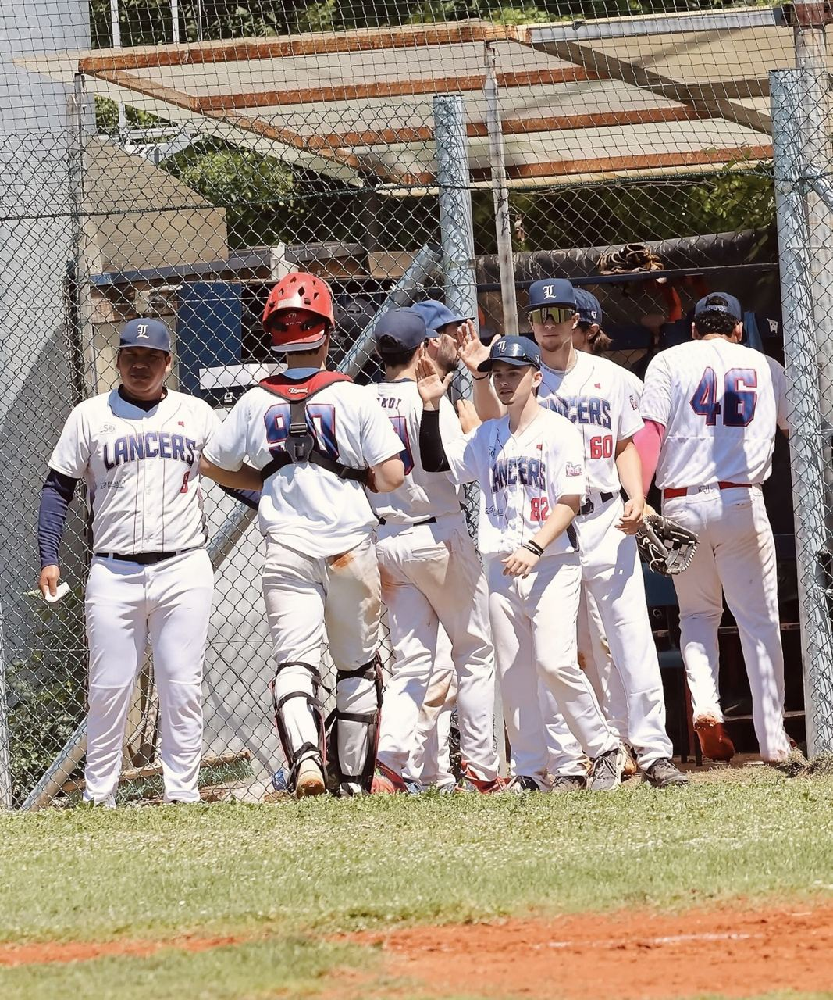

Si chiude con un bilancio di sette vittorie e sette sconfitte il girone di andata dei Lancers guidati da Carlos Sanchez e Vladimir Lugo Ramirez. Un record in perfetta parità che racconta una stagione finora fatta di alti e bassi, ma che lascia anche qualche rimpianto, considerando diverse gare sfuggite per uno scarto minimo.

L’avvio di campionato non è stato dei più semplici. All’esordio sono arrivate due sconfitte contro gli Etruscan Fighters, nonostante due buone prestazioni. Anche nella successiva trasferta di Livorno i Lancers hanno mostrato un buon baseball, riuscendo a conquistare una vittoria e andando vicinissimi al doppio successo. A pesare è stato però un inning completamente negativo che ha permesso alla formazione amaranto di realizzare ben dodici punti, ribaltando l’andamento della gara.
Le difficoltà sono proseguite con le due sconfitte casalinghe contro il Long Bridge Bologna, squadra giovane ma molto attrezzata. In particolare, una delle due sfide si è decisa per un solo punto di differenza, confermando quanto il margine tra vittoria e sconfitta sia stato spesso sottile.
Da quel momento è arrivata però la grande reazione dei Lancers. Con una sola vittoria nelle prime sei partite, la squadra è riuscita a cambiare marcia ottenendo tre doppi successi consecutivi. Prima le due importanti vittorie esterne sul Colorno, poi il doppio successo interno contro il Cali Roma, che in quel momento occupava il secondo posto in classifica. A seguire sono arrivate anche le due nette vittorie nel recupero contro Arezzo, concluse entrambe per manifesta superiorità e capaci di dare ulteriore fiducia al gruppo.
Tra gli aspetti più positivi di questa prima parte di stagione c’è stata la crescita sul monte di lancio di Alessandro Ferrini, sempre più protagonista e punto di riferimento per la squadra. Da sottolineare anche l’ottimo recupero dall’infortunio di Giuseppe Grado, tornato a dare un contributo importante sia in campo che nello spogliatoio.
In attacco, segnali molto incoraggianti sono arrivati dal neoacquisto Daniel Vergara, che con le sue prestazioni sta mettendo in grande difficoltà i lanciatori avversari, e dal veterano Simone Geri, autore di una prima metà di campionato solida e costante nel box di battuta.
La rincorsa si è però interrotta nell’ultima giornata del girone di andata, con la difficile trasferta di Sesto Fiorentino che ha visto il Padule imporsi in entrambe le gare.
Il bilancio finale racconta quindi di una squadra capace di reagire alle difficoltà e di risalire la classifica dopo un avvio complicato. Con sette vittorie e sette sconfitte, i Lancers guardano ora al girone di ritorno con la consapevolezza di poter competere contro chiunque e con l’obiettivo di trasformare in vittorie quelle partite che, nella prima metà di stagione, sono sfuggite davvero per pochi dettagli.
Infine, tutta la società desidera rivolgere un grande augurio di pronta guarigione ai nostri atleti Francesco Grassi, Daniele Silvestri e Lorenzo Scarpulla, con la speranza di rivederli presto in campo insieme ai compagni per affrontare al meglio il girone di ritorno. ⚾💙